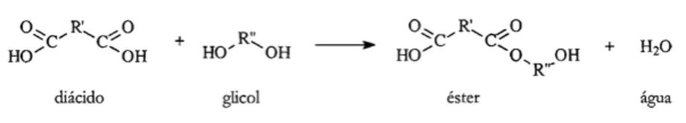
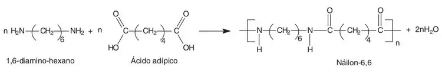

Outro processo de polimerização consiste na associação de moléculas com formação simultânea de outras além do polímero, por exemplo o H2O
Falamos então de reações de condensação e dos resultantes polímeros de condensação
Os poliésteres são copolímeros obtidos a partir de álcoois e de ácidos carboxílicos. Estes têm a particularidade de terem 2 grupos -OH (álcool) e 2 grupos -CO2H (ácido)

As moléculas de H2O formam-se a partir da associação de um H do grupo -OH, do álcool, com o fragmento -OH do grupo -C02H, do ácido
Se prepararmos os copolímeros através de uma diamina e de um ácido, obtemos poliamidas

As moléculas de água formadas resultam da associação de um átomo H do grupo amina com o fragmento -OH do grupo carboxílico